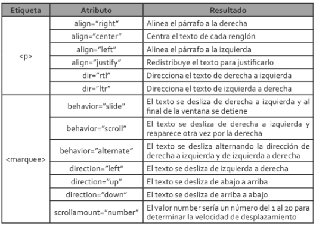
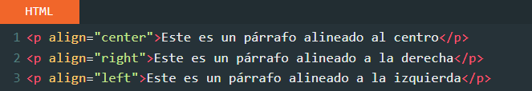
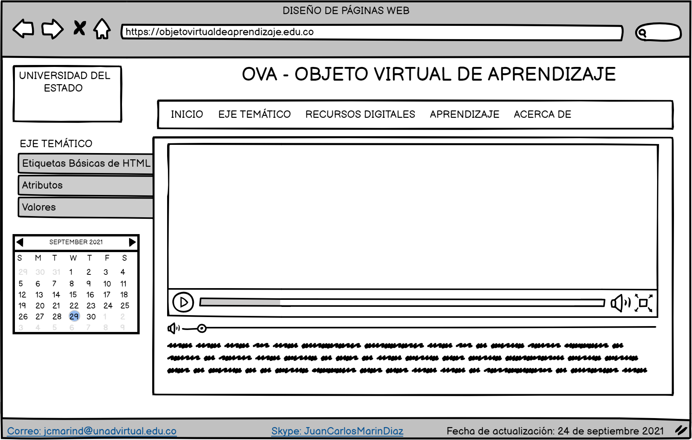

El propósito de este sitio es dinamizar el aprendizaje mediante el uso de una herramienta digital, un Objeto Virtual de Aprendizaje OVA. En esta segunda fase se describen los principales conceptos de las estructuras básicas de HTML, atributos y valores.
Etiquetas Básicas de HTML
Etiquetas de HTML. Fuente:https://websgalicia.es/blog/wp-content/uploads/etiquetas-html-800x560.jpg.
El lenguaje HTML es un lenguaje de marcas o etiquetas: los elementos que conforman la página web se describen mediante palabras especiales que marcan el inicio y el final de los mismos, estas palabras se denominan etiquetas.
la estructura típica de las etiquetas HTML es: < nombre_etiqueta >... </nombre_etiqueta >
Estructura básica y etiquetas más utilizadas
Doctype: Es la primera línea de código que tiene que estar en cualquier documento HTML. Esta línea indica al navegador qué especificación de HTML se está utilizando.
HTML: El par de etiquetas < html > y </html > se encuentran al principio y al final de todo documento HTML y sirve para indicar a todos las aplicaciones que pueden analizar texto sin formato (no sólamente a los navegadores) que esa página utiliza HTML.
Head: Las etiquetas <head> y </head> delimitan el contenido de la cabecera del documento, es decir, el título de la página y una información que no aparece en la pantalla.
Title: El par de etiquetas <title> y </title> rodea el texto del título. El título aparece en la barra de título del navegador web cuando presenta la página. Normalmente va dentro del elemento <head>.
Meta: <meta> permite aportar metainformación al documento, para su mejor identificación e indexación por los motores de búsqueda.
Body: Las etiquetas <body> y </body> rodean el contenido visible de la página. También puede llevar incluida información sobre las propiedades de la página, por ejemplo <body bgcolor="#RRGGBB"> define el color de fondo de la página.
Celaya Luna, A. (2014).
Atributos
Los atributos son elementos de las etiquetas que proporcionan características a un texto, imagen etc. Loa tributos van insertos dentro de la etiqueta de inicio y llevan el signo de igual "=" con los valores de dichos atributos. Ejemplo:
<font color=red> Hola! </font>
En el ejemplo anterior, la etiqueta indica que el elemento afectado será el texto "Hola!" y que además aparecerá en la página de color rojo.
Al igual que existen muchas etiquetas, tambien existen diversos atributos, algunos estan diseñados para una etiqueta en concreto, mientras que otros se pueden utilizar en varias etiquetas diferentes. Así mismo, algunas etiquetas pueden contener sólo un tipo de atributo mientas que otras pueden contener más de uno.
Equipo vertice 2009.
A continuación se presentan los atributos más comunes para las etiquetas de texto:

Atributos más comunes para etiquetas de texto. Fuente:Equipo vertice 2009.
Valores
Cuando se hace uso de un atributo HTML se debe especificar su valor, este puede representar una cantidad exacta, característica especifica o simplemente en que medida se ejecutará dicho atributo.
El valor se expresa entre comillas después del signo de (=), de acuerdo al atributo, pueden haber una variedad de valores disponibles. Por ejemplo, en caso dealign puede tomar el valor de center (centro), right (derecha), left (izquierda), justify (justificado).
Por ejemplo el atributo align con su valor en center aplicado a un párrafo hará que el texto este alineado al centro. Además probemos los otros valores como el de derecha e izquierda.

Valores de posición del texto para un atributo de texto. Fuente:Equipo vertice 2009.
Mockup de la página principal del OVA solicitado:

Mockup de la página principal del OVA. Fuente el autor.
Bibliografía
Celaya Luna, A (2014). Creación de páginas web: HTML 5. Málaga, Spain: Editorial ICB. Recuperado de https://elibro-net.bibliotecavirtual.unad.edu.co/es/ereader/unad/56045?page=5.
Equipo vertice 2009. Diseño básico de páginas web en HTML. España: Publicaciones Vértice S.L. Recuperado de: https://books.google.com.co/books?id=Q4VL8Tiy7gcC&printsec=frontcover&hl=es&source=gbs_ge_summary_r&cad=0#v=onepage&q&f=false